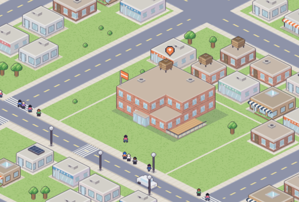
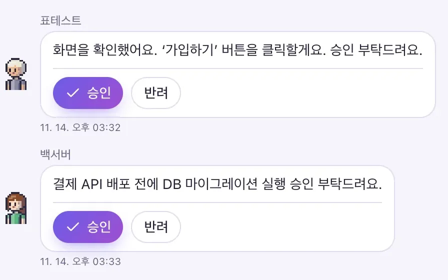
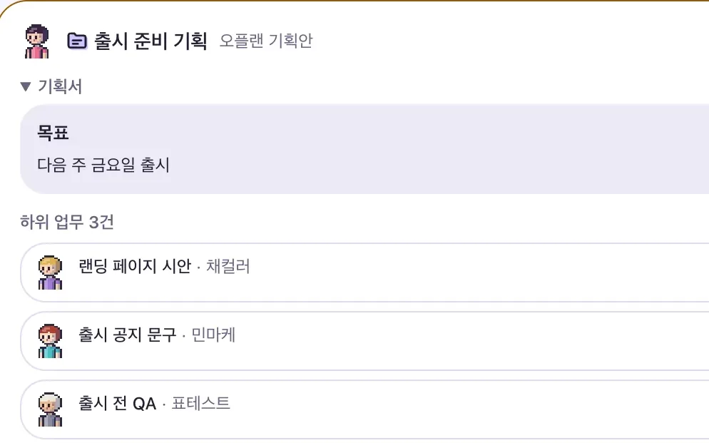
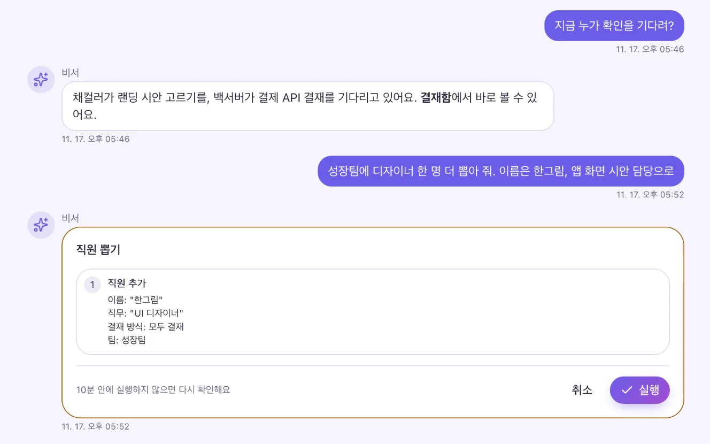
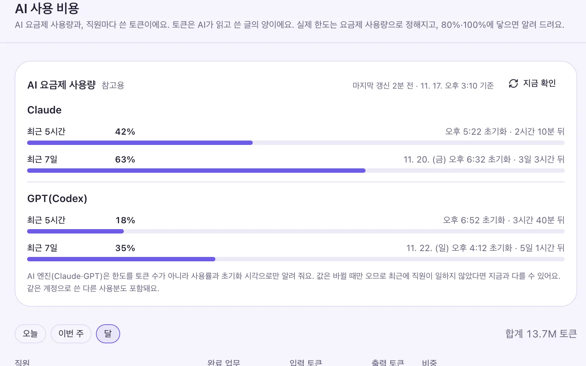
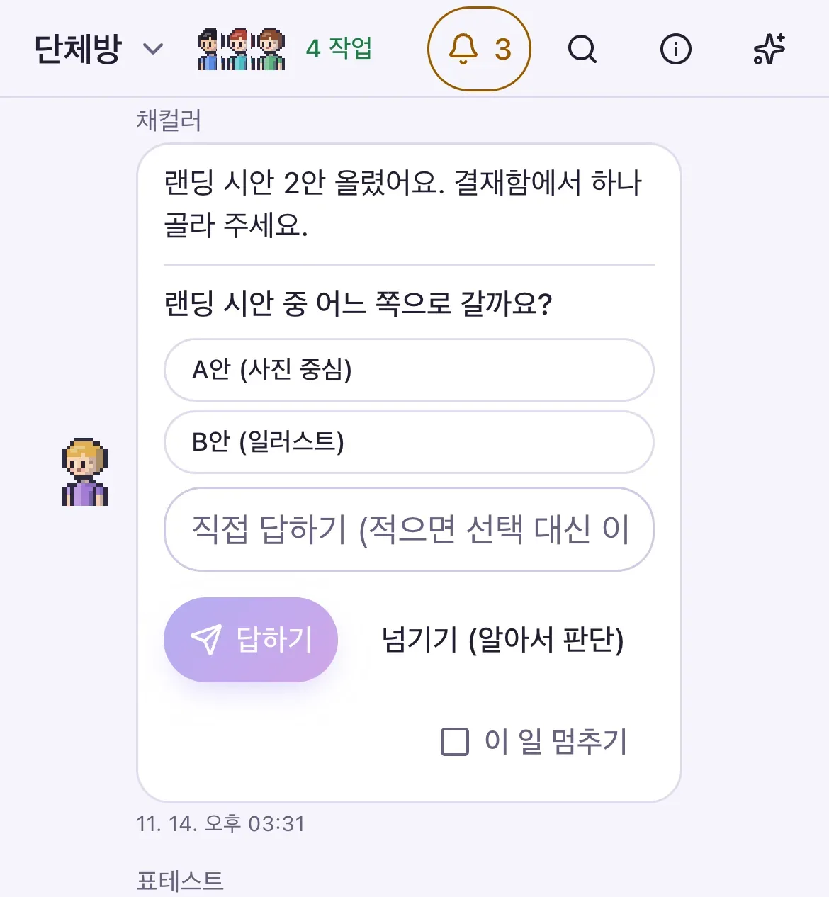
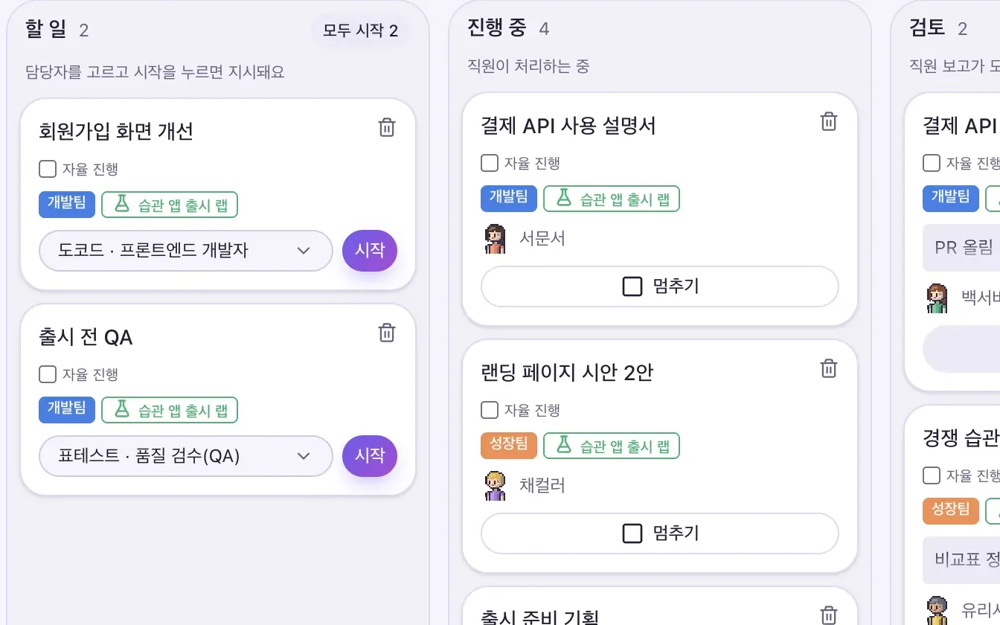
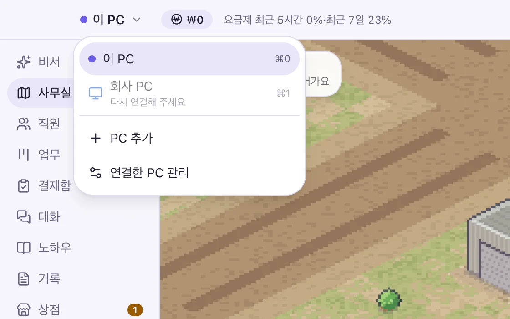

点下面的消息亲自发送试试。群聊里谁接下了任务、怎么干活、什么时候先来问你，都会原样展示给你看。
工作就能赚钱，用钱来装修，等级提升后大楼也会变。
员工工作、完成任务越多，公司资金和等级就越高。还有每日任务和成就奖励。
家具、摆件、壁纸、地板、桌子、椅子。每日特价、季节限定、成套奖励。
可以旋转、移动、收回。猫和狗会到处走动，也可以让秘书帮你摆放。

工作模式下会隐藏等级、商店和办公室画面。
群聊下指令和装修办公室上面已经看过了。其余功能用真实的应用画面展示。

修改文件、运行命令等影响大的操作，会在聊天和审批箱里由你批准或驳回。每位员工能自主做到哪一步由你决定，改过的文件也能一键还原。

组长写好方案和子任务，你确认后，团队按顺序推进并整理汇报。

夜间汇总、在回答里直接审批、查找并打开文件。桌面秘书不用打开窗口也能回答。

每位员工选 Claude 或 GPT 即可。直接用你已有的登录，不需要 API 密钥，有一个就能开始。两个套餐的用量也能在一个画面里查看。

外出时用安卓应用审批和聊天。还可以连接最多 3 台其他电脑，来回切换。
谁在工作、谁在等你确认，一眼就能看清。在公司可以用隐藏游戏元素的工作模式，干净清爽。

待办看板、会议纪要和任务卡片、先读参考文档再工作、按时重复的任务。
最多连接 3 台自己的电脑，就能在眼前这台电脑上查看其他电脑的办公室、员工、对话和审批，并给它派活。在电脑端应用中使用。

在左上角的名称栏选择电脑，就会打开那台电脑的办公室窗口。可以给那台电脑的员工派活、处理审批。
用“让另一台电脑查看这台”生成的代码连接，马上就能查看。以前连接过的电脑，第一次查看时那台电脑上会弹出许可窗口。
连接成功后代码仍然保留，按“关闭代码”才停用。重启应用后依然有效，输错 3 次会换成新代码。
会告诉你该做什么，比如“请在那台电脑上允许”“请更新那台电脑”“请重新连接”。
不需要。直接使用电脑上已登录的 Claude 或 GPT（ChatGPT）账号。员工用该账号工作，用量也计入该账号。
不必。登录其中一个就能开始，另一个可以以后在设置里连接。两个都有时，可以为每位员工选择用哪一个。GPT 员工也已正式支持。
告诉你员工的情况、批准或驳回审批、汇总昨晚的情况、查找并打开文件和文件夹，还能在团队和项目房间里留言。较大的操作会先显示确认卡片。
可以。雇人、在聊天里交代任务、在审批箱批准或驳回即可，不需要输入命令。
影响较大的操作会先进入审批箱，批准后才会进行。员工改动的文件可以用“恢复到任务之前”一次还原。无法撤销的危险命令始终会被拦截。
不能。它只在员工成果、附件和项目文件夹里查找，打开前会先出现一次确认卡片。可执行文件不会被打开，只会显示所在文件夹。在手机上只能查找，无法打开。
不会。只有配发了装备的员工才能看到屏幕，点击和输入必须经你在审批箱批准。
员工、任务和聊天记录都存放在你的电脑里。手机连接默认关闭，开启后才可连接。GPT 登录信息不由应用保管，而由登录工具管理。
可以。安卓手机在设置的“连接其他设备”卡片里扫二维码连接。还能连接最多 3 台其他电脑，用“切换电脑”来回切换（仅限电脑端应用）。连接的电脑端应用必须保持开启。
不可以。手机应用是远程使用电脑上运行的 AI Office，所以电脑端必须保持开启。在外面也能连接。
这是因为应用还没有签名。Mac 上在 系统设置 › 隐私与安全性 中点“仍要打开”，Windows 上点“更多信息 › 仍要运行”即可。
可以。在设置中可选 10 种颜色主题、复古办公室游戏主题，以及浅色、深色、跟随设备设置。手机应用会按电脑上的设定显示。
支持韩语、英语、日语和中文。默认跟随电脑（手机）的语言，不支持时以英语启动。随时可在设置顶部的“语言”中更改。
点击应用左侧边栏的“发送反馈”，会打开已自动填好应用版本和操作系统的 GitHub 提交页面。如果最近有错误，会先问你是否一起发送。